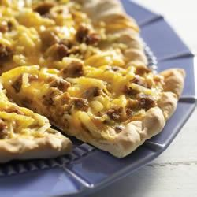

Breafast Sausage Pizza

Description
Ingredients
- 1 ¾ cups all-purpose flour, or more if needed
- 1 envelope Fleischmann's® Pizza Crust Yeast or RapidRise Yeast
- ¾ teaspoon salt
- ⅔ cup water
- 1 tablespoon olive oil
- 8 ounces sausage, cooked and crumbled
- 1 cup frozen hash brown potatoes, thawed
- ¼ cup chopped onion
- 3 large eggs eggs
- ½ teaspoon Durkee® Ground Mustard
- ½ teaspoon Durkee® Fine Grind Black Pepper
- ½ teaspoon salt
- 1 cup shredded Cheddar cheese
Steps
- Combine 1 cup flour, undissolved yeast and salt in a large bowl. Heat water and oil until very warm (120 degrees to 130 degrees F). Add to flour mixture and beat for 2 minutes. Add enough remaining flour to make a soft dough. Knead until smooth and elastic, about 5 minutes. (If using RapidRise yeast, let dough rest at this point for 10 minutes.)
- Roll dough to 12-inch circle; place in greased pizza pan. OR, pat dough with floured hands, pressing gently to fill greased pizza pan or baking sheet. Form a rim by pinching the edge of the dough; prick surface with fork.
- Bake crust in preheated 450 degrees F oven on lowest oven rack for 8 minutes. Reduce oven to 375 degrees F. Remove pizza from oven.
- Top pizza crust with sausage, hash browns and onions. Beat eggs, ground mustard, pepper and salt together in a bowl. Pour over toppings. Sprinkle with cheese. Bake for 16 to 20 minutes until eggs are set and crust is browned.